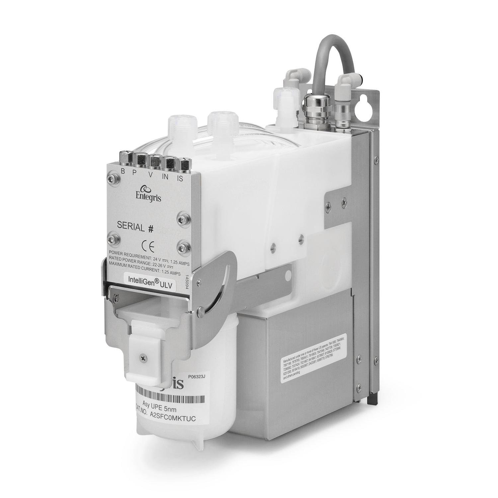
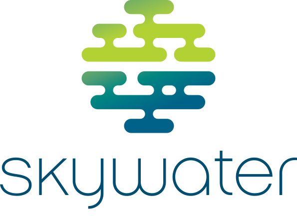

For my university capstone, I'm building software to interface
with a large network of semiconductor process pumps at SkyWater's
Austin fab↗.
Our team is implementing Entegris's network serial protocol to
communicate with the pumps and the gateways connecting them to
the fab's network. We're using that data to provide technicians
with pump monitoring, backups, and telemetry on pump activity.


Portfolio Analyzer
I'm building a tool to backtest portfolios, compare them with a
benchmark, and explore what drives their returns with factor
regression. It also samples different allocations and plots an
efficient frontier to show the tradeoff between risk and expected
return.
I built this poker bot with Justus and Suhas for the 2025
competition hosted by my university's ACM chapter. We placed third.
The bot estimates hand strength with Monte Carlo simulations,
then uses a decision tree to choose actions based on that estimate
and the pot odds, both before and after the flop.
My favorite part was building the testing suite. It let us
compare changes and iterate quickly.
I worked on Skutor, a sketch-based AI tutor built for TidalHack.
Students draw a problem and their work on a canvas, and the app
suggests the next step.